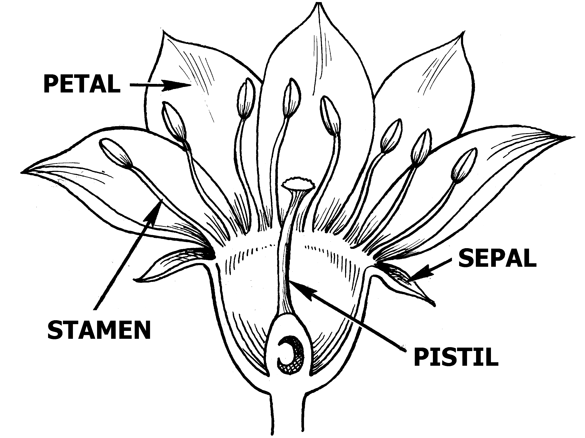

The pistil is the female reproductive structure of the flower. Pistil helps to receive pollen and in the fertilization process. The pistil is also involved in the process of germination of the pollen grains.

PETALS
Petals (collectively called the corolla) are also sterile floral parts that usually function as visually conspicuous elements serving to attract specific pollinators to the flower. The calyx and the corolla together are referred to as the perianth.
SEPAL
Usually green, sepals typically function as protection for the flower in bud, and often as support for the petals when in bloom.
STAMEN
Stamens are the male reproductive organs of flowering plants. They consist of an anther, the site of pollen development, and in most species a stalk-like filament, which transmits water and nutrients to the anther and positions it to aid pollen dispersal.